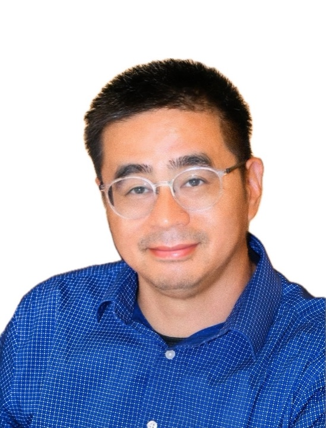

S

Prof. Sheldon X.-D. Tan
Founder
Professor of Electrical & Computer Engineering, University of California, Riverside
Prof. Tan directs the VLSI System and Computation Lab (VSCLAB) at UC Riverside, where the NoveetyAI engines originated. His research spans VLSI reliability modeling, thermal analysis and management, hardware acceleration, and AI/LLM-driven approaches to electronic design automation.
- IEEE Fellow, 2025 — Council on Electronic Design Automation (CEDA)
- Editor-in-Chief, Integration, the VLSI Journal (2016–2025); currently subject editor
- 30+ years of research in VLSI design and EDA